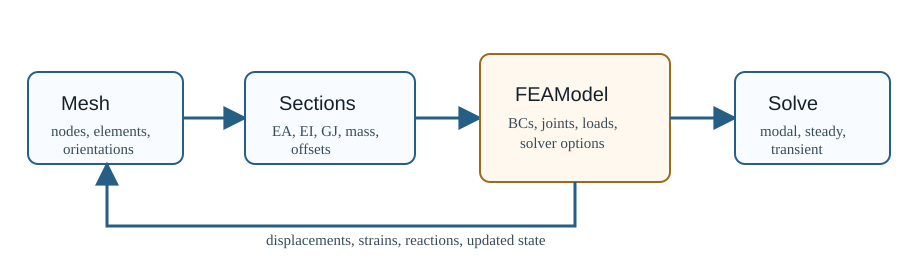

OWENSFEA.jl
OWENSFEA.jl is the structural finite-element package used by the OWENS wind energy toolkit. It models slender turbine components with Timoshenko beam elements and supplies structural states, strains, modal data, and reaction loads to higher-level OWENS workflows.
The package is used most often for vertical-axis wind turbine structures, where spin softening, centrifugal stiffening, Coriolis terms, and rotating-frame reaction loads can matter. It can also be run as a structural-only beam solver for straight or swept cantilevers, modal validation cases, transient tip-load response, and reduced-order structural dynamics.

The implementation follows the Timoshenko beam formulation and dynamic-system work described in:
Owens, B. C., "Theoretical Developments and Practical Aspects of Dynamic Systems in Wind Energy Applications," Ph.D. thesis, Texas A & M University, 2013.
Capabilities
| Workflow | Main entry points | Notes |
|---|---|---|
| Modal analysis | modal, autoCampbellDiagram | Linearized state-space eigenanalysis, optional spin-up preload, optional matrix export. |
| Static/steady solve | staticAnalysis | Linear or nonlinear load-stepped solve with strains and nodal reactions. |
| Transient dynamics | structuralDynamicsTransient | Newmark-beta ("TNB") and Dean ("TD") paths are selected through FEAModel. |
| Reduced-order dynamics | reducedOrderModel, structuralDynamicsTransientROM | Modal reduction with stored spin, gyric, acceleration, and body-force coefficients. |
| Assembly utilities | Mesh, SectionPropsArray, El, FEAModel | Mesh, section properties, boundary conditions, joints, and concentrated nodal terms. |
Package Boundaries
OWENSFEA owns structural mesh data, element and section-property data, boundary-condition maps, joint transforms, concentrated nodal terms, element matrix assembly, structural solvers, strain recovery, and reaction-force postprocessing. Aerodynamic loading, turbine-level controls, and pre-processing of composite section data are normally handled by other OWENS packages before being mapped into OWENSFEA inputs.
The maintained test suite is the best executable specification for the current behavior. The examples page summarizes those cases and points to the exact test files that pin the contracts.
Where To Start
- Use Quick Start for a minimal direct-constructor cantilever workflow.
- Use Test-backed Examples to find maintained examples from the test suite.
- Use Model Assembly before changing mesh, joint, boundary-condition, or concentrated-term inputs.
- Use Theory, Frames, and Units before comparing OWENSFEA against GXBeam, OpenFAST, analytical beam equations, or experiments.
- Use Developer Guide before changing solver logic or extending the API.